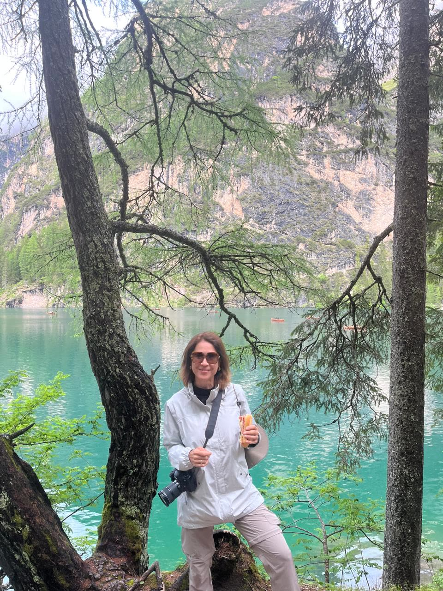
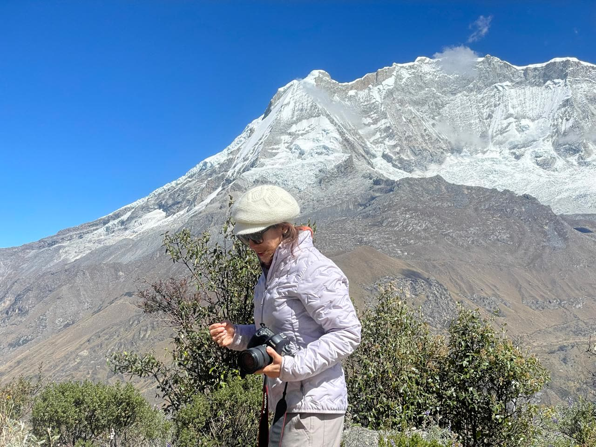
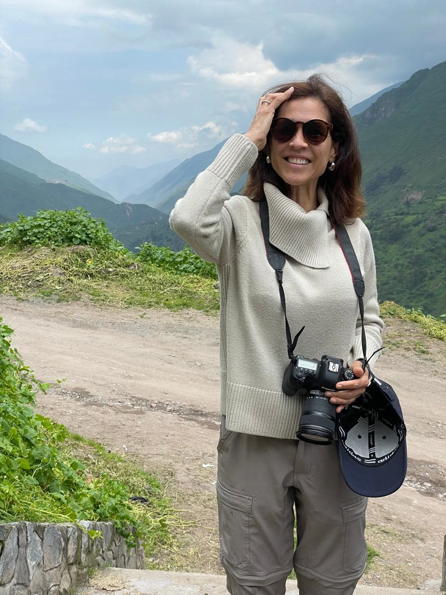
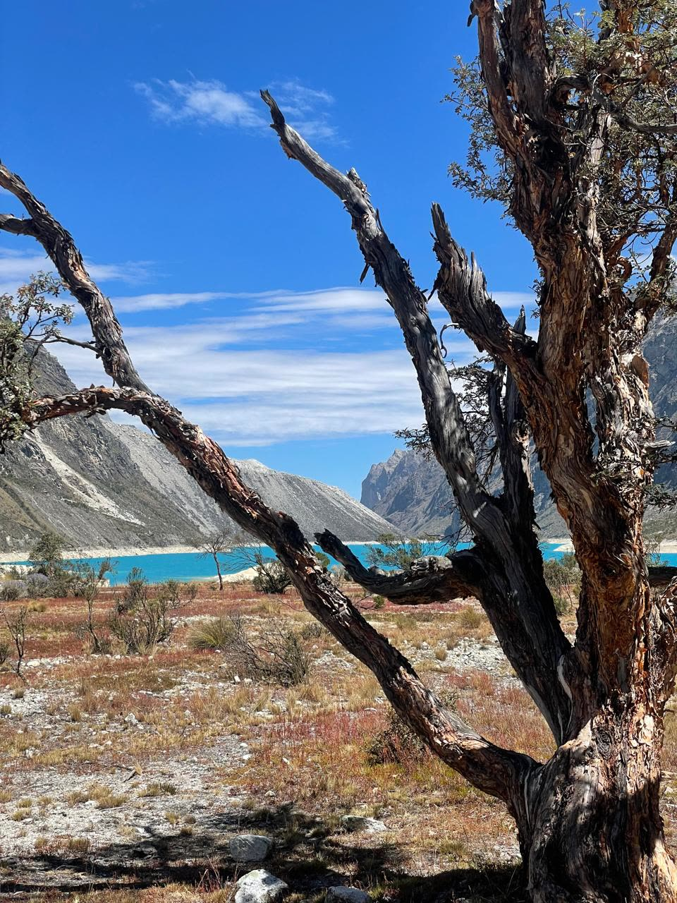
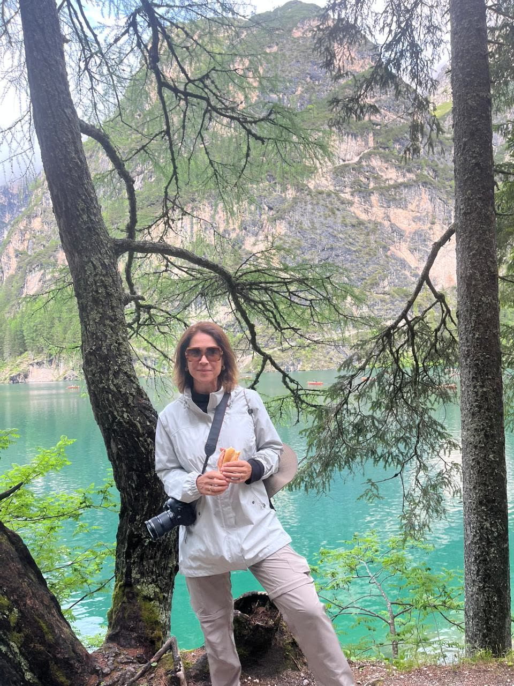
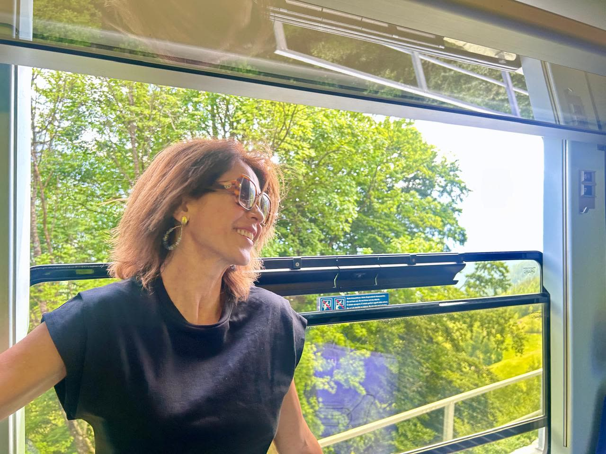

Psicóloga clínica, más de veinte años acompañando procesos
Liliana Torres.
Con profundidad, pero también con humanidad.
Explorar el enfoque →↓ Desliza para descubrir
Agenda
El cambio no comienza cuando dejamos de sufrir. Comienza cuando aprendemos a relacionarnos de una manera diferente.
Acompaño a personas que atraviesan momentos de cambio, búsqueda personal o experiencias que necesitan ser comprendidas e integradas.

Si estás aquí
Quizás estás atravesando un momento en el que algo en tu vida ya no se siente como antes.
Puede ser ansiedad, estrés, una relación que te genera sufrimiento, una dificultad para poner límites, una pérdida, un cambio importante o simplemente esa sensación de estar haciendo todo lo posible y, aun así, no sentirte bien.
Si estás aquí, probablemente estás buscando comprender qué te está pasando y encontrar una manera diferente de afrontarlo.

Empecemos por lo que estás sintiendo.
Ansiedad y estrés
→Cuando la mente no para y el cuerpo lo empieza a resentir.
Pérdidas y cambios
→Una pérdida, un cambio importante, una crisis vital.
Relaciones y vínculos
→Una relación que te genera sufrimiento o una dificultad para poner límites.
Crecimiento personal
→Volver a ti con más presencia y menos exigencia.
Soy Liliana Torres Mora.
Soy psicóloga clínica, nací en Bogotá, Colombia, y desde hace más de veinte años acompaño a personas, parejas, familias, líderes y equipos en diferentes momentos de sus vidas.
Pero mi manera de trabajar no se define únicamente por mi formación. Se ha construido también a través de los años, de las historias que he tenido el privilegio de escuchar, de las personas que me han permitido acompañarlas en momentos de vulnerabilidad y de mi propia experiencia de vida.

Testimonios
Lo que me cuentan cuando miran atrás.
“Aquí va el testimonio de un ex paciente, en sus palabras y con su consentimiento escrito.”
“Aquí va un segundo testimonio real, más breve.”
“Aquí va un tercer testimonio real, más breve.”
Desde el blog
Ver todo el blog →
Ideas para el camino.
Mi propósito
Acompañarte a transformar la manera en que te relacionas contigo mismo, con los demás y con la vida.
Desde una mirada sistémica, consciente y compasiva. Con profundidad, pero también con humanidad.
Porque para mí, hacer terapia no es simplemente aliviar el sufrimiento. Es abrir un espacio para comprender, crecer y vivir de una manera más consciente y coherente con quien eres y con la vida que quieres construir.
Primer paso
Cuando quieras, empezamos por una conversación.
Veinte minutos para conocernos, sin costo y sin compromiso. Desde ahí decidimos si es el espacio adecuado para ti.
01 El enfoque
Somos personas con una historia.
Muchas veces hacemos lo mejor que podemos con lo que hemos aprendido y con los recursos que tenemos disponibles en ese momento. Y, a veces, aquello que alguna vez nos ayudó a protegernos, adaptarnos o seguir adelante deja de funcionar y comienza a generar sufrimiento. Ahí puede comenzar un proceso de transformación.

Sistémica, Palo Alto
La solución intentada
Muchas veces, lo que haces para resolver un problema es justo lo que lo mantiene vivo. Miramos ese patrón y cambiamos el intento.
Mindfulness y compasión
Aprender a relacionarte de otra manera
Observar tus pensamientos, emociones y sensaciones sin reaccionar automáticamente crea un espacio entre lo que sientes y lo que haces. La compasión te ayuda a tratarte desde la comprensión y no desde la exigencia, la culpa o la autocrítica.
Experiencias psicodélicas
Preparación e integración
Evaluación, preparación e integración psicoterapéutica, desde un enfoque de reducción de riesgos y sin ofrecer ni facilitar sustancias psicoactivas.
Ver el proceso completo →Una mirada diferente al sufrimiento.
Un patrón que se repite de manera automática.
Mi enfoque es sistémico porque entiendo que nadie puede comprenderse completamente separado de sus relaciones y de su contexto. Somos parte de familias, parejas, comunidades, culturas y diferentes sistemas que influyen en la manera en que pensamos, sentimos y nos relacionamos.
Por eso, cuando trabajamos juntos, no busco solamente identificar qué está pasando dentro de ti. También exploramos qué ocurre en tus relaciones, qué patrones se repiten, qué aprendiste a lo largo de tu historia y qué lugar ocupan hoy esas experiencias en tu manera de vivir.
No se trata de buscar culpables. Se trata de comprender. Porque cuando podemos mirar nuestra historia con mayor claridad, dejamos de repetirla de manera automática y empiezan a aparecer nuevas posibilidades.

Qué puedes esperar
Un espacio donde no tengas que llegar con todo claro.
No trabajo con respuestas prefabricadas ni con fórmulas iguales para todos. Cada persona llega con una historia diferente y, por eso, cada proceso necesita ser construido de manera particular.
Mi papel no es decirte cómo debes vivir. Es acompañarte a comprenderte mejor, reconocer tus recursos, ampliar tus posibilidades y desarrollar nuevas formas de relacionarte contigo mismo, con los demás y con las circunstancias de tu vida.
Hablemos
¿Resuena contigo esta forma de trabajar?
Agendemos una primera conversación y lo vemos juntos.
Empecemos por lo que estás sintiendo.
Puedo acompañarte en procesos relacionados con estrés, ansiedad, adaptación a cambios, crisis vitales y búsqueda de mayor bienestar.
Ansiedad y estrés
→Mente acelerada, insomnio, tensión constante. Recuperar calma sin negar lo que sientes.
Experiencias psicodélicas
→Preparación antes de la experiencia e integración de lo vivido después.
Relaciones y vínculos
→Pareja, familia, trabajo. Romper patrones que se repiten y comunicar distinto.
Duelo y cambios
→Una pérdida, una transición, un cambio que necesita ser comprendido e integrado.
Crecimiento personal
→No hay crisis, pero sientes que puedes vivir con más sentido y presencia.
Equipos y empresas
→Bienestar, liderazgo consciente y manejo del estrés para organizaciones.
No tienes que saber ponerle nombre.
Empezamos por donde estás. Agenda una llamada y lo ordenamos juntos.
03 El proceso
Un camino en tres tiempos.
Más allá del motivo por el que llegues a consulta, mi propósito es ofrecerte un espacio seguro y respetuoso en el que puedas explorar lo que estás viviendo sin juicios ni respuestas prefabricadas.
01
Primera conversación
Nos conocemos sin compromiso. Me cuentas qué te trae y vemos si es el espacio adecuado para ti.
02
El trabajo
Sesiones a tu ritmo. Entendemos los patrones, practicamos presencia y probamos formas nuevas de relacionarte con lo que duele.
03
Integración
Consolidamos lo aprendido para que puedas sostenerlo por tu cuenta, con más recursos y más calma.
¿Cuánto dura un proceso?+
Depende de ti y de lo que traigas. Cada proceso necesita ser construido de manera particular.
¿Atiendes online?+
Sí. Trabajo presencial y online con la misma cercanía.
¿Acompañas experiencias psicodélicas?+
Ofrezco evaluación, preparación e integración psicoterapéutica. Mi acompañamiento se realiza desde un enfoque de reducción de riesgos, respetando la autonomía de cada persona y sin ofrecer ni facilitar sustancias psicoactivas.
¿Cómo agendo?+
Empezamos por una llamada de 20 minutos, sin costo. Escríbeme y coordinamos.
El primer paso es una conversación.
Cómo podemos trabajar juntos.
Terapia individual
→Un espacio propio para tu proceso, con mindfulness y autocompasión como base.
Pareja y familia
→Enfoque sistémico: trabajamos el vínculo y los patrones, no la culpa de una sola persona.
Sesiones online
→El mismo acompañamiento, desde donde estés, con la misma presencia.
Experiencias psicodélicas
→Evaluación, preparación e integración psicoterapéutica, desde un enfoque de reducción de riesgos y sin ofrecer ni facilitar sustancias psicoactivas.
Empresas y equipos
→Talleres y programas de bienestar, liderazgo consciente y manejo del estrés.
Charlas y podcast
→Conferencias, entrevistas y colaboraciones sobre salud mental.
Las tarifas se conversan en la primera llamada.
Ideas para el camino.
Mi deseo es que estas palabras acompañen a quien hoy está sufriendo, pero también a quienes tienen el privilegio y la responsabilidad de cuidar.
Da el paso
Si esto te resonó, hablemos.
Una conversación de 20 minutos puede ser el inicio de algo distinto.
Preparación e integración de experiencias psicodélicas
Una experiencia intensa no necesariamente se convierte por sí misma en un cambio duradero.
La preparación y la integración pueden ofrecer un espacio para acercarse a estas experiencias con mayor conciencia, cuidado y responsabilidad.
Qué es
- Un acompañamiento psicoterapéutico antes y después de la experiencia.
- Evaluación, preparación e integración.
- Un enfoque de reducción de riesgos que respeta tu autonomía.
- Un espacio para comprender y dar sentido a lo vivido.
Qué no es
- Ofrecer ni facilitar sustancias psicoactivas.
- Una decisión que tomo por ti.
- Una promesa de cambio duradero.
Tres fases, un solo objetivo.
i
Evaluación
Miramos con honestidad tu momento y tu contexto antes de cualquier decisión.
ii
Preparación
Exploramos tus expectativas y tu estado emocional antes de la experiencia.
iii
Integración
Conectamos lo que surgió con tu vida cotidiana, tus emociones, tus vínculos, tus valores y tus decisiones.
¿Es seguro?+
Solo dentro de un marco supervisado, con evaluación previa y acompañamiento profesional en las tres fases. Fuera de eso, no lo recomiendo.
¿Es para mí?+
Depende de tu momento y de tu contexto. Por eso todo empieza con una evaluación, y la decisión es tuya.
¿Cuánto dura el proceso?+
No es una sesión, es un proceso de varias semanas. La integración posterior es tan importante como la experiencia misma.
Con calma
¿Tienes preguntas sobre este camino?
Conversémoslo sin compromiso. La primera llamada es para resolver tus dudas.
Agenda
Empezamos por una conversación.
Veinte minutos, sin costo y sin compromiso, para conocernos y ver si soy la persona adecuada para acompañarte.
- +51 982 007 828
Si estás atravesando una crisis o sientes que tu vida corre peligro, no esperes a nuestra conversación. Llama gratis a la Línea 113 del Minsa, opción 5, disponible las 24 horas, o acude a la emergencia más cercana.
